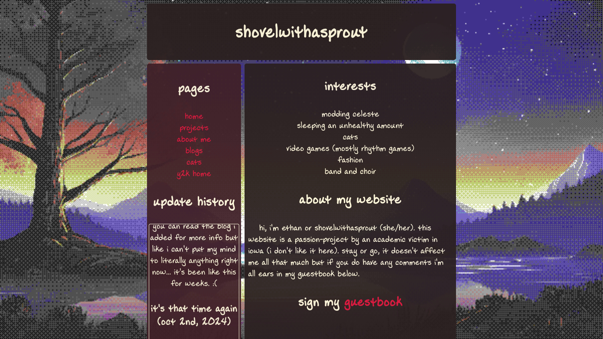
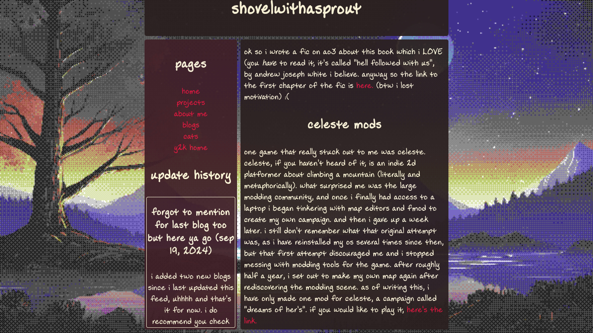
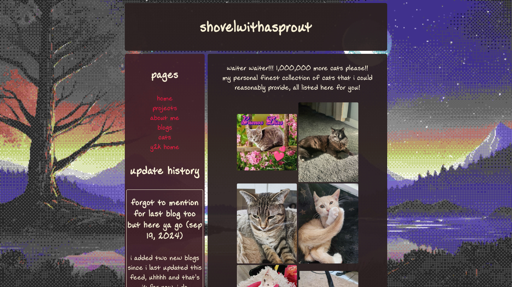
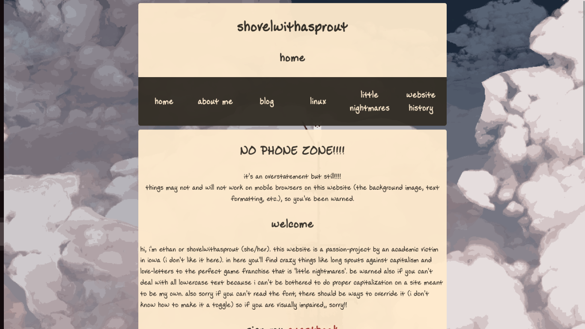
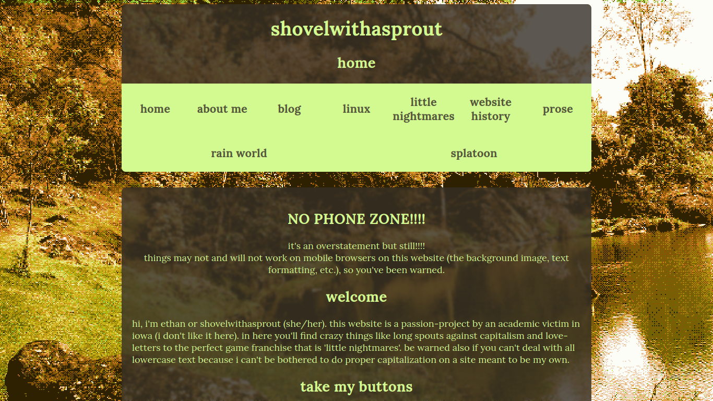

disclaimer
honestly idk if it shows but i am not that great at making websites... heh.... i know my way around some basic html and css but javascript scares me. what you're gonna see is a bit over 6 months of history (counted from the first to most recent blog) recollected in one page.
the first* design
  this design lasted the longest, it was the first design i came up with that i liked, and it also happens to be the first design that i backed up in its entirety. it's pretty, but also pretty minimal, which is why i ended up wanting a change of pace. it also had a lot of little inconsistencies in how html files were formatted, some tabs were ignored, the use of iframes all on one website limited its flexibility, the font was just a little bit questionable, etc. of course up until pretty recently i still used that font, but i still think it deserves being called out. honestly, despite its imperfections, it still has a lot of charm to me and i'll always remember it as the first time i could settle and be proud of a website. oh god, the amount of tutorials i looked up (mostly w3 let's just be honest here) to make this layout was insane. i didn't touch css for a while after making this theme, until i needed to make a website for a shortfilm i was a part of (i'm not going to show you haha).
version two
alright, so, version two was the first ground-up rewrite i did for this website. i pretty much scrapped every page (except for the blogs of course, those i only edited to fit my new html conventions) to make it work how i wanted, and it was the shortest lasting one. as of writing this, i literally just heavily modified it in exchange for better colors and whatnot. this theme was super super minimal, almost too minimal for my taste, almost too boring. of course i would never have such a thing on this blessed website, but it was close. my favorite part about this layout is definitely the navbar, it's so simple yet it's all you realistically should want from a navbar. the font did persist from the last layout, partially (okay maybe completely) because i couldn't be bothered with switching fonts to a more readable one that fit the website's new aesthetic and appeal.
present day (as of july 10th, 2025)
naturally, this page will evolve as my website does, until its longer than any other page on this website. i'm very indecisive, so a lot of changes happen here when i'm feeling productive and motivated.